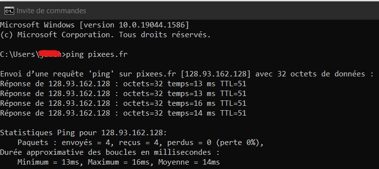
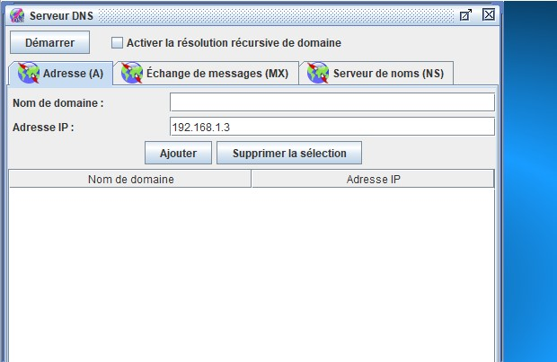

Serveur DNS
Étudions l'adresse qui se trouve dans la barre d'adresse de votre navigateur web :
https://pixees.fr/informatiquelycee/n_site/snt_internet_dns.html
Cette adresse peut-être décomposée en quatre parties :
- la partie "https" (HyperText Transfert Protocol).
- "pixees.fr" est la partie qui va nous intéresser ici, "fr" est une extension du nom de domaine et "pixees" est un nom de domaine.
- la partie "informatiquelycee/n_site/snt_internet_dns.html" nous l'avons vu dans la séquence sur le web, c'est l'URL.
Sans trop rentrer dans les détails, "pixees.fr" désigne une machine sur un réseau.
Étrange...jusqu'à présent nous avons vu que c'est une adresse IP qui permet de reconnaitre une machine sur un réseau, pas une combinaison du genre "a.b" avec a un nom de domaine et b une extension du nom de domaine (cette combinaison est appelée "adresse symbolique") comme dans "pixees.fr".
Rassurez-vous, en fin de compte, c'est bien une adresse IP qui permet d'identifier une machine sur un réseau, mais étant donné que pour un humain il est beaucoup plus facile de retenir "pixees.fr" que de retenir l'adresse IP 128.93.162.128, un service dénommé DNS (Domain Name Server) permet de traduire les adresses IP (exemple "128.93.162.128") en adresse symbolique (exemple "pixees.fr") et vice versa.
- Dans la barre d'adresse de votre navigateur, tapez "http://128.93.162.128/informatiquelycee/n_site/snt_internet_dns.html".
Comme vous pouvez le constater, cela fonctionne parfaitement, adresse IP ou adresse symbolique : même résultat !
- Sur votre ordinateur, ouvrez une console (si vous ne savez pas comment faire, demandez de l'aide à votre enseignant). Dans la console, nous allons faire un "ping", comme nous avons appris à le faire avec le simulateur Filius, mais au lieu de taper : ping "une adresse IP", vous allez taper : "ping pixees.fr"
Vous devriez alors voir quelque chose qui ressemble à ceci :

Comme vous pouvez le constater, l'adresse IP de la machine "pixees.fr" est bien 128.93.162.128.
Pour certaines adresses publiques, Il est possible d'effectuer ce genre de traduction sur un site web : https://www.whatsmyip.org/whois-dns-lookup/.
- Aller sur le lien ci-dessus et recueillir des information sur la machine "pixees.fr".
Comme vous pouvez le constater, ce site fournit énormément d'informations (n'hésitez pas à cliquer sur "montrer" en bas de page).
Toutes ces informations peuvent être utilisées par exemple pour vérifier l'origine d'un site (en cas de doute sur les contenus d'un site,...).
Exercice
- Ouvrir le fichier snt_sim_dns.fls avec filius.
Serveur DNS
- Placer un nouvel ordinateur dont le nom sera "serveur DNS".
- Changer l'adresse IP par : 192.168.3.1.
- Remplir le champ "passerelle" par l'adresse 192.168.3.254.
Routeur
- Cliquer sur le routeur, puis sur le bouton "gérer les connexions" et enfin sur "+".
- Relier le serveur DNS au routeur.
- Modifier l'adresse IP du câble entre le routeur et le serveur DNS (il doit s'allumer en vert) pour l'adresse 192.168.3.254.
M1
- Cliquer sur l'ordinateur M1, modifier le champ "serveur DNS", y mettre l'adresse de notre serveur.
Mode simulation
- Passer en mode simulation.
- Ouvrir le bureau de l'ordinateur "serveur DNS", et installer le logiciel "serveur DNS".
- Ouvrir l'application fraichement installée, vous obtenez quelque chose semblable à :

Modifier les champs :
- Nom de domaine = M4
- Adresse IP = 192.168.2.1
Puis cliquer sur le bouton "ajouter" pour valider.
- Ouvrir l'application ligne de commande depuis l'ordinateur M1.
- Exécuter la commande "ping M4".